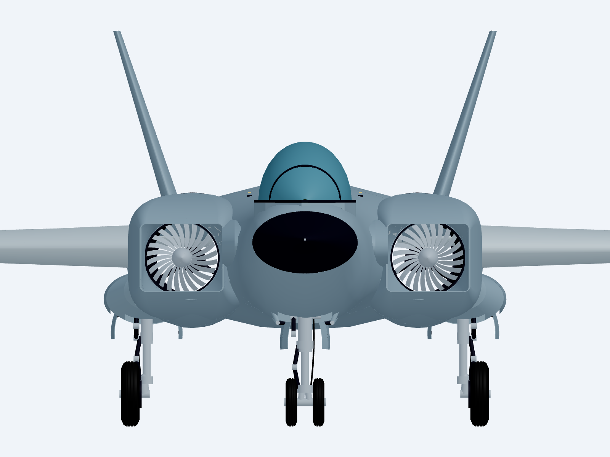
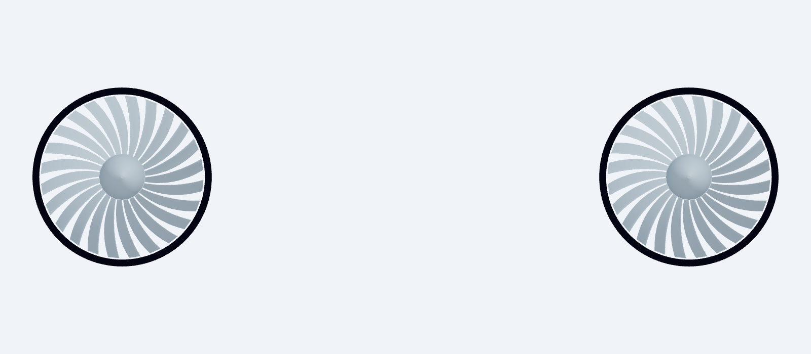
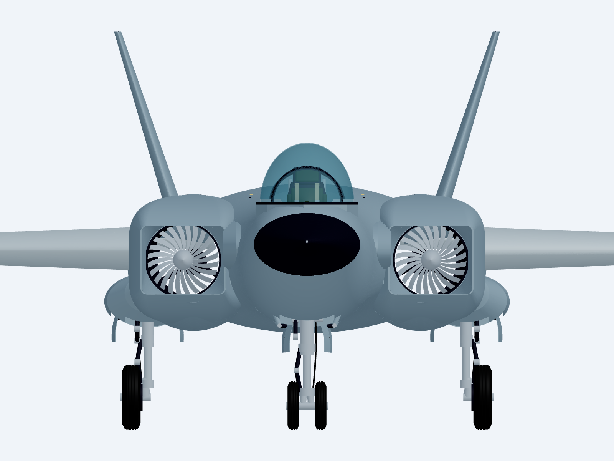

October 1, 2026 · Design manifest · Aircraft principles
Later revision: Rear airframe and engine correction. This page retains its earlier revision evidence; the new report identifies the current artifacts.
The previous rotor used sixteen round rods as blades. Solid fuselage and wing-root material crossed the engine passage, and the wing-root leading edges projected ahead of the intake mouths. Together, those shapes hid parts of the rotor and produced an uneven front view.



| Check | Result | Scope |
|---|---|---|
| Saved solid validity | 527 positive-volume solids; no validity failures | Current STEP artifact, checked after export |
| Blade-to-case gap | 6.981 mm | Representative blade; both engines have identical repeated geometry |
| Neighboring blades | 15.528 mm minimum gap; zero overlap | Representative neighboring pair on each rotor |
| Blade root attachment | 576.134 mm³ embedded in hub | Representative blade root on each rotor |
| Spinner attachment | 1,217,515 mm³ embedded in hub | Each spinner; geometric attachment only |
| Rotor / airframe interference | Zero measured overlap | All rotor parts against fuselage, wing skins and root fairings |
| Casing continuity | 0 mm front and aft contact gaps; no overlap with checked airframe | Compressor ring to core case to exhaust liner |
| Passage samples | 1,152 samples; zero blocked by checked airframe | Three radii, twelve angles and sixteen axial stations per engine; excludes intended engine internals |
| Game export | Four wheel pivots matched; public, production and delivery GLBs have identical SHA-256 hashes | Exported data, without runtime mechanisms |
| Production build | TypeScript and Vite passed | Existing bundle-size warning remains |
These blades are concept geometry. Their aerodynamic performance, manufacturing tolerances, shaft dynamics and structural loads have not been substantiated. A clear geometric passage is not an airflow or pressure-recovery result. No flight, gameplay or runtime aircraft tests were performed.
The retained gear check used the engine-cavity revision before the final wing-root mouth and wall trims. Those trims remove wing material at the intake opening and recess it inside the ducts; they do not change the fuselage, core, gear or mounts. The earlier gear, door and cockpit records retain their original document hashes and are not presented as fresh checks of this master.
Compressor measurements · Current delivery hashes and scope · Export audit · Production build log
STEP master · Compressor detail · Game GLB · Parametric source
Live CAD master · Live compressor detail · GitHub repository
bun run stormbird:build rebuilds the aircraft and exported game mesh. bun run stormbird:inspect includes the new saved-artifact compressor check. bun run stormbird:audit checks export datums and static ground geometry. bun run stormbird:viewer starts or reuses the independent CAD Viewer.